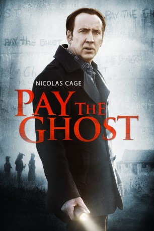

#9891 Pay the Ghost
 
 IMDB-Wertung: 5.2 / 10
IMDB-Wertung: 5.2 / 10  Tomatometer: 10
Tomatometer: 10  Metascore: 23
Metascore: 23 
Wegen der vielen Arbeit vernachlässigt der Englischprofessor Mike Lawford seine Familie und verbringt zu wenig Zeit mit seinen Liebsten. Das Versprechen an Sohnemann Charlie will der Vater aber einhalten und so besuchen sie zusammen eine Halloweenparade. Was ein schöner Familienausflug werden sollte, mutiert zum totalen Albtraum, als der Junge von einem auf den anderen Moment verschwindet. Auch ein Jahr danach gibt es trotz intensiver Suche keinen Hinweis auf Charlies Aufenthaltsort. Und so wachsen Mikes Schuldgefühle, während ihn schreckliche Albträume heimsuchen. Doch so langsam glaubt der Vater, sein Kind versucht durch die bedrohlichen Bilder Kontakt zu ihm aufzunehmen. Gemeinsam mit seiner entfremdeten Frau Kristen geht er der übernatürlichen Spur nach - mit dem Ergebnis, dass der Professor schon bald an seinem Verstand zweifelt. Könnte sein Sohn das Opfer eines rachsüchtigen Geistes geworden sein?
Jahr: 2015
Dauer: 94 Minuten
FSK: 16
Land: USA Studio: RLJ EntertainmentTonspuren: DTS - ,
Untertitel: Deutsch,
Auflösung: 1080p (1920x800) Größe: 5406 MB
Genre: Thriller, Horror, Drama, Mystery
Regisseur: Uli Edel
Drehbuch: Tim Lebbon, Dan Kay
Soundtrack: Joseph LoDuca
Darsteller:
 Nicolas Cage als Mike Lawford
Nicolas Cage als Mike Lawford Sarah Wayne Callies als Kristen
Sarah Wayne Callies als Kristen Veronica Ferres als Hannah
Veronica Ferres als Hannah Lyriq Bent als Jordan
Lyriq Bent als Jordan- Jack Fulton als Charlie
 Stephen McHattie als Blind Man
Stephen McHattie als Blind Man Juan Carlos Velis als Morales
Juan Carlos Velis als Morales- Mark Irvingsen als Angry Villager #1
- Sofia Wells als Middle Child
- Janet Lo als Jai Wen
- Rosalba Martinni als Rosa
- Erin Boyes als Sexy Coed
- Leah Madison Jung als Mia
- Alex Mallari Jr. als EMT
 Ho Chow als Dai Wok Cook
Ho Chow als Dai Wok Cook- Sydney Cross als Ghost child
- Omar Alex Khan als Medical Examiner
- Elizabeth Jeanne le Roux als Mom
- Maxwell McCabe-Lokos als Mr. Moldanado
- Lauren Beatty als Annie Sawquin
- Kalie Hunter als Ghost Annie
- Susannah Hoffmann als Jane
- Liam Buckle als Eldest Child
- Aidan Wojtak-Hissong als Youngest Child
- Caroline Gillis als Priestess
- Jamillah Ross als Rhonda
- Iain Becking als Student #1
- Darren Frost als Ice Cream Vendor
- Matteo Ghazni als Pablo
- Breeanna Booth als University Student
- Milan Carmona als Student
- Jaden Estee als Raggedy Ann
- Eric Haber als Ghost Character, Homeless Character
- Katerina Kerfoot als Singing Lost Child
 Elena Khan als Witch
Elena Khan als Witch- Fabio Lusvarghi als Nun (Halloween Parade)
- Benjamin Wiebe als Ghost Child
Datei: X:\2015(N-Z)\Pay the Ghost (2015, FSK16, 1920x800).mkv seit 08.11.2018
Festplatte: HD 2015(A-Z)
 Es gibt insgesamt 161 Filme in der Gruppe '2015(N-Z)'
Es gibt insgesamt 161 Filme in der Gruppe '2015(N-Z)'